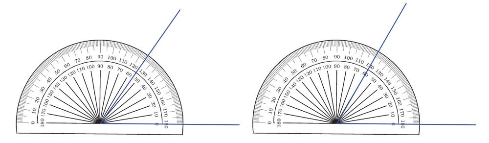
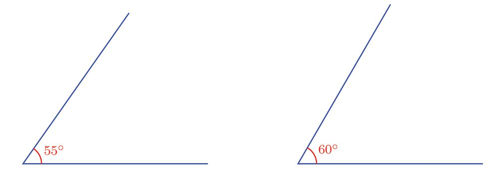
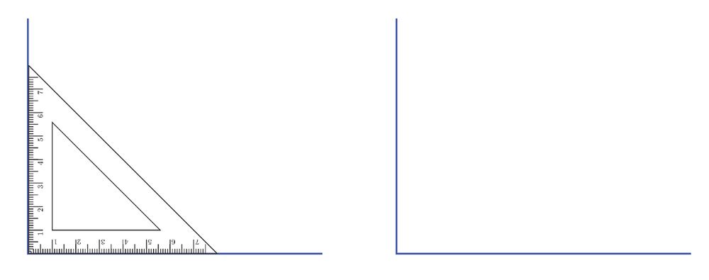

കുത്തനെയും ചരിച്ചും വരകൾ ചേർത്ത്, പലതരം രൂപങ്ങൾ വരച്ചത് ഓർമ്മയുണ്ടോോ?
(അഞ്ചാംക്ലാസിലെ വരകളുംം വട്ടങ്ങളുംം എന്ന പാഠത്തിലെ വരക്കണക്ക് എന്ന ഭാഗം).
ഈ ചിത്രങ്ങളിലെല്ലാം നാല് മൂലകളുണ്ട്; ഓരോോ മൂലയിലും രണ്ട് വരകൾ ചേരുന്നു.
ആദ്യയത്തെ ചിത്രത്തിൽ ഇങ്ങനെ ചേരുന്ന വരകളുടെ ജോോടികൾ വെവ്വേറെ നോോക്കാം:
രണ്ടാമത്തെ ചിത്രത്തിലെ വരകൾ ചേരുന്നതോോ ?
രണ്ട് വരകൾ ഒരു ബിന്ദുവിൽ കൂട്ടിമുട്ടുമ്പോോൾ ഉണ്ടാകുന്ന രൂപത്തിന് കോോൺ
(Angle) എന്നാണ് പേര്.
അപ്പോോൾ ആദ്യംം വരച്ച മൂന്ന് രൂപത്തിലും നാല് കോോൺ വീതം ഉണ്ട്. ഈ മൂന്ന് ചിത്ര
ത്തിലെയും താഴത്തെ ഇടതുമൂലകളിലെ കോോണുകൾ മാത്രം നോോക്കൂ:
ഇതിൽ നടുവിലെ ചിത്രത്തിലെ വരകൾ, വലതുവശത്തുള്ള ചിത്രത്തിലെ വരകളെക്കാൾ അല്പം
കൂടി വിടർന്നതല്ലേ?
ഇടതുചിത്രത്തിൽ കുറേക്കൂടി വിടർന്ന്, മുകളിലെ വര കുത്തനെയായി.
അപ്പോോൾ വലതുവശത്തുള്ള കോോൺ ഏറ്റവും ചെറുത്, നടുക്കുള്ളത് ഇതിനെക്കാൾ വലുത്,
ഇടതുവശത്തുള്ള കോോൺ ഏറ്റവും വലുത് എന്നുപറയാം.
ഈ ചിത്രങ്ങൾ നോോക്കുക:
ഏതാണ് വലിയ കോോൺ ?
വലതുചിത്രത്തിലെ വരകളാണല്ലോോ കൂടുതൽ വിടർന്നിരിക്കുന്നത്; അതുതന്നെയാണ് വലിയ
കോോൺ.
ഈ ചിത്രങ്ങളിലോോ ?
പറയാൻ കഴിയുന്നില്ല, അല്ലേ ?
ഇവ തമ്മിൽ ഒത്തുനോോക്കാൻ, കോോണുകളുടെ വലുപ്പം
കൃത്യയമായി അളക്കാൻ കഴിയണം. അതിനായി ഒരു
ഉപകരണം ജ്യാാമിതിപ്പെട്ടിയിലുണ്ട്.
ഇതിൽ കുറേ വരകൾ വരച്ചിരിക്കുന്നത്
കണ്ടില്ലേ ?
ഓരോോ വരയുടെയും നേരെ താഴെയും
മുകളിലുമായി രണ്ട് സംഖ്യയയുണ്ട്.
താഴത്തെ സംഖ്യയകൾ നോോക്കുക:
0 എന്ന് അടയാളപ്പെടുത്തിയിരിക്കുന്ന താഴത്തെ വരയിൽനിന്ന്, മുകളിലേക്ക് നീങ്ങുന്ന
മറ്റ് വരകൾ നോോക്കുക. മേല്പോോട്ട് നീങ്ങുംതോോറുംം, ഈ വരകളുംം താഴത്തെ വരയും തമ്മിലു
ള്ള കോോൺ വലുതാകുന്നു. ഈ വലുപ്പത്തെ സൂചിപ്പിക്കുന്ന സംഖ്യയകളാണ് ഓരോോ വരയുടെ
നേരെയും എഴുതിയിരിക്കുന്നത്.
ഇവയിൽ താഴത്തെ വര കഴിഞ്ഞ് ആദ്യയത്തെ വരയുടെ നേർക്ക് 10 എന്നാണല്ലോോ എഴുതിയിരി
ക്കുന്നത്. അപ്പോോൾ ഈ വരയും താഴത്തെ വരയും തമ്മിലുള്ള കോോണിന്റെ അളവ് 10 ഡിഗ്രി
എന്നാണ് പറയുന്നത്; എഴുതുന്നത് 10° എന്നും. താഴത്തെ വരയും 40 എന്ന് അടയാളപ്പെടു
ത്തിയിരിക്കുന്ന വരയും തമ്മിലുള്ള കോോണിന്റെ അളവ് 40°.
മറ്റൊൊരു രീതിയിൽ പറഞ്ഞാൽ 10° വലുപ്പമുള്ള 4 കോോണുകൾ ചേർന്ന
താണ് 40° വലുപ്പമുള്ള കോോൺ:
ഇങ്ങനെയും കോോൺ വരയ്ക്കാമല്ലോോ.
ഇടതുവശത്ത് വരയ്ക്കാനും അളക്കാനുമുള്ള സൗൗകര്യയത്തിനാണ്,
കോോൺമാപിനിയിൽ ഈ സംഖ്യയകൾക്ക് മുകളിൽ മറ്റൊൊരു ചുറ്റ്
സംഖ്യയകൾ എഴുതിയിരിക്കുന്നത്.
ഇനി കോോൺമാപിനി ഉപയോോഗിച്ച് കോോണുകൾ അളക്കുന്നത് എങ്ങനെയെന്നു നോോക്കാം.
ഉദാഹരണമായി ഈ കോോണുകൾ നോോക്കൂ.
ഓരോോ കോോണിന്റെയും മൂലയിൽ കോോൺമാപിനി ചുവടെക്കാണിച്ചിരിക്കുന്നതുപോോലെ വയ്ക്കുക.
ഇടതുവശത്തെ കോോണിന്റെ അളവ് 50° എന്നും, വലതുവശത്തെ കോോൺ 60° എന്നും കാണു
ന്നില്ലേ? ഇത് അടയാളപ്പെടുത്തുന്നത് ഇങ്ങനെയാണ്.
10
Page 11
Figure fig_ch01_p011_01 (Page 11)

Figure fig_ch01_p011_02 (Page 11)

Figure fig_ch01_p011_03 (Page 11)

Figure fig_ch01_p011_04 (Page 11)
കോോണുകൾ
ഇനി നേരത്തെ ഒത്തുനോോക്കാൻ കഴിയാതിരുന്ന കോോണുകൾ നോോക്കാം:
വലതുകോോൺ 60° ആണെന്നു കാണാം. ഇടതുകോോണോോ ?
ഈ കോോണിലെ ചരിഞ്ഞ വര കടന്നുപോോകുന്നത്, കോോൺമാപിനിയിലെ 50 നും 60 നും ഇടയ്ക്കു
കൂടിയാണല്ലോോ.
കോോൺമാപിനിയിലെ 10 ഇടവിട്ട സംഖ്യയകൾക്കിടയിലുള്ള ഭാഗങ്ങളെയെല്ലാം പത്തായി ഭാഗി
ക്കുന്ന ചെറിയ വരകൾ ഉണ്ടല്ലോോ. ഇവ ഓരോോന്നും 1° വ്യയത്യാസമാണ് കാണിക്കുന്നത്.
നമ്മുടെ ചിത്രത്തിലെ വര കടന്നുപോോകുന്നത് 50 നും 60 നും ഇടയ്ക്കുള്ള അഞ്ചാമത്തെ (അല്പം
നീളം കൂടിയ) അടയാളത്തിലൂടെയാണ്.
അതായത്, ഈ കോോൺ 55° ആണ്.
ഇനി ഒരു വര വരച്ച്, അതിൻ്റെ ഒരറ്റത്ത് മട്ടമൂല വച്ച് കുത്തനെ മേല്പോോട്ട് ഒരു വര വരയ്ക്കുക
(അഞ്ചാം ക്ലാസിലെ വരകളുംം വട്ടങ്ങളുംം എന്ന പാഠത്തിൽ, വരക്കണക്ക് എന്ന ഭാഗം).
അപ്പോോൾ മട്ടമൂലയിലെ കോോൺ 90° ആണ്. ഈ കോോണിന് മട്ടകോോൺ (Right angle) എന്നും
പേരുണ്ട്. ചിത്രങ്ങളിൽ മട്ടകോോൺ അടയാളപ്പെടുത്തുന്നത് ഇങ്ങനെയാണ്:
ഒരു വരയുമായി 90° കോോൺ ഉണ്ടാക്കുന്ന ഏത് വരയും ആദ്യയത്തെ വരയ്ക്ക് ലംബം
(Perpendicular) എന്നാണ് പറയുന്നത്.
ഉദാഹരണമായി, ചുവടെയുള്ള ചിത്രത്തിലെ പച്ച വരകൾ രണ്ടും, നീല വരയ്ക്ക് ലംബമാണ്.
ഒരു ചതുരത്തിലെ കൂട്ടിമുട്ടുന്ന വശങ്ങളെല്ലാം പരസ്പരം ലംബമാണ്.
കോോൺ വരയ്ക്കൽ
ഇനി കോോൺമാപിനി ഉപയോോഗിച്ച് നിശ്ചിത അളവുള്ള കോോൺ
വരയ്ക്കുന്നതെങ്ങനെയെന്ന് നോോക്കാം. ഉദാഹരണമായി, ചിത്രത്തിൽ
കാണിച്ചിരിക്കുന്ന കോോൺ എങ്ങനെ വരയ്ക്കും ?
ആദ്യംം വിലങ്ങനെ ഒരു വര വരയ്ക്കുക.
അതിന്റെ ഇടത്തേയറ്റത്ത് കോോൺമാപിനി ചുവടെ കാണിച്ചിരിക്കുന്നതുപോോലെ വച്ച്, അതിലെ
40 എന്ന അടയാളത്തിനുനേരെ ഒരു കുത്തിടുക:
ഇനി കോോൺമാപിനി മാറ്റി, ഈ കുത്തും, വരയുടെ ഇടത്തെ അറ്റവുമായി യോോജിപ്പിച്ചാൽ 40°
കോോൺ ആയി.
(1) ചുവടെയുള്ള ചിത്രങ്ങളിലെ കോോണുകളെല്ലാം അളന്ന് അടയാളപ്പെടുത്തുക:
ഇതിലെ ഏറ്റവും മുകളിലുള്ള ചെറിയ വരകൾ ഈ അർധവൃത്തത്തെ 180 സമഭാഗങ്ങളാക്കുന്നു.
അതായത്, ഈ വരകൾ നീട്ടി അർധവൃത്തത്തിൻ്റെ കേന്ദ്രവുമായി യോോജിപ്പിച്ചാൽ, ഒരേ വലുപ്പ
മുള്ള 180 കോോണുകൾ കിട്ടുംം.
ഈ കോോണുകളോോരോോന്നിൻ്റെയും വലുപ്പം 1° ആണെന്ന് നേരത്തെ പറഞ്ഞല്ലോോ.
അപ്പോോൾ, ഒരു അർധവൃത്തത്തിൽ 181 ആരങ്ങൾ ഒരേ അകലം ഇടവിട്ടു വരച്ചാൽ, അടുത്തടു
ത്തുള്ള ആരങ്ങൾ ചേരുന്ന കോോണിൻ്റെ അളവാണ് 1°.
അർധവൃത്തത്തിനു പകരം, മുഴുവൻ വൃത്തം ഉപയോോഗിച്ചാണ് ഇക്കാര്യംം സാധാരണയായി പറ
യുന്നത്.
ഒരു വൃത്തത്തിൽ 360 ആരങ്ങൾ ഒരേ അകലം ഇടവിട്ടുവരച്ചാൽ, അടുത്തടുത്തുള്ള ആര
ങ്ങൾ ചേരുന്ന കോോണിൻ്റെ അളവാണ് 1°.
1° വലുപ്പമുള്ള കോോണിൻ്റെ വശങ്ങൾ വളരെ അടുത്തായിരിക്കുമല്ലോോ. അവ കുറേ നീട്ടി വരച്ചാ
ലെ, ഈ കോോൺ കാണാൻ കഴിയൂ:
മുകളിൽ പറഞ്ഞ കാര്യംം തിരിച്ചു പറയാം. ഒരു വൃത്തത്തിൻ്റെ കേന്ദ്രത്തിൽ 1º ഇടവിട്ട് 360 ആര
ങ്ങൾ വരയ്ക്കാം. ഇവ വൃത്തത്തെ 360 സമഭാഗങ്ങളാക്കുന്നു.
10° ഇടവിട്ടായാലോോ ?
36 ആരങ്ങൾ; അവ വൃത്തത്തെ
36 സമഭാഗങ്ങളാക്കുന്നു:
ഈ ആരങ്ങളുടെ അറ്റങ്ങൾ യോോജിപ്പിച്ചാൽ, ആറു വശങ്ങളുള്ള ഒരു രൂപം കിട്ടുംം:
ഈ രൂപം തന്നെ, മൂന്ന് വൃത്തങ്ങൾ ഉപയോോഗിച്ച് അഞ്ചാംക്ലാസിൽ വരച്ചത് ഓർമ്മയുണ്ടോോ ?
(വരകളുംം വട്ടങ്ങളുംം എന്ന പാഠത്തിലെ വട്ടക്കണക്ക് എന്ന ഭാഗം).
അപ്പോോൾ അഞ്ചാംക്ലാസിൽ വരച്ച ഈ ചിത്രങ്ങൾ ഇനി കുറെക്കൂടി എളുപ്പം വരയ്ക്കാമല്ലോോ.